Part one
The organisation
Who Shrunkhala is, what it believes in and the work it does.
Introduction
Introduction to Shrunkhala
The term ‘Shrunkhala’, derived from Sanskrit, translates to ‘Chain’ in English.
It reflects the philosophy and approach of the organization — emphasizing collective effort and interconnected responsibility.
Guided by the belief that sustainable communities are achievable only through the active engagement of citizens.
Organisation
Organizational Overview
- Registered Name
- Shrunkhala Organisation for Sustainable Development
- Legal Status
- Non-Profit Entity, registered under Section 8 of the Companies Act.
- Established
- 2018
- Headquarters
- Navi Mumbai, Maharashtra
- Head Office
- Kharghar, Navi Mumbai
Operates as a citizen-focused organization, fostering participatory models for sustainable living.
Beliefs
Core philosophy, strategic approach and the founder’s vision
Core Philosophy
- Shrunkhala functions as a People’s Organization with citizens at the center of all initiatives.
- Believes in collective responsibility as the foundation for sustainable development.
- Seeks to transform awareness into tangible citizen action for long-term environmental and social impact.
Strategic Approach
- Engaging citizens through education, dialogue, and collaboration.
- Promoting awareness campaigns for sustainable living and responsible consumption.
- Facilitating community-driven initiatives to address local environmental challenges.
- Strengthening partnerships that enhance social, environmental and economic resilience.
Founder’s vision
- “I believe real change begins with one person’s thinking. When an individual understands their responsibility, the whole community starts to transform.”
- “For me, Shrunkhala is about creating a space where people especially women can learn, talk, and grow together. That’s how sustainable communities are built.”
- “Sustainability does not start with big projects. It starts with simple habits.”
Purpose
Why Shrunkhala?
Vision
An inclusive, sustainable and equitable society in which people feel safe & happy and want to live now and in future
Approach
Shrunkhala is People’s organisation. Our approach is citizen centric.
Objective
To build an open platform for the people, especially women, where they can explore their skills and design their dreams.
Objectives
Shrunkhala’s Objectives
- Empower Women
- Educate Changemakers
- Build Green Community
- Support Sustainable Livelihoods
- Move Towards Renewable Energy
- Foster Happiness & Safety
Impact
Impact and Achievements
- 10,000+Lives Touched
Through awareness drives, sustainability workshops, and community initiatives.
- 25 MTCO₂ Emission Reduced
Achieved through environmental projects and waste management initiatives.
- 100+Skill Upgradation Programs
Conducted to promote eco-literacy, sustainable practices, and livelihood enhancement.
- 200,000+Seedballs Created
Distributed to support reforestation and community-led environmental restoration.
Programmes
Latest Projects
Dreamweaver – Capacity Building Program for Women
Empowers women by providing an open platform to explore and enhance their skills.
Zero Waste – Reduce, Reuse, Recycle
Promotes responsible consumption through refuse, reuse, and recycle practices.
Ankur – Program for Food Sustainability
Focuses on developing kitchen gardens within social institutions.
Kavach – Environmental Conservation Program
Addresses the impact of urbanization and loss of green cover.
Champ – Developing Socially & Environmentally Responsible Kids
Aims to nurture social and environmental awareness among children.
Campaigns
Campaigns
Case studies
Case Studies
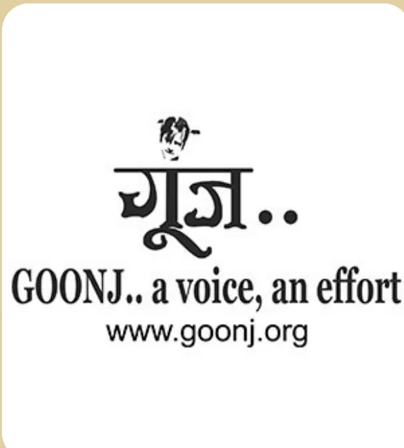
GOONJ
Goonj is a New Delhi-based NGO that uses its ‘Cloth for Work’ model to link urban waste management (sustainability) with community-led development (behavior change) and women’s livelihood across India.
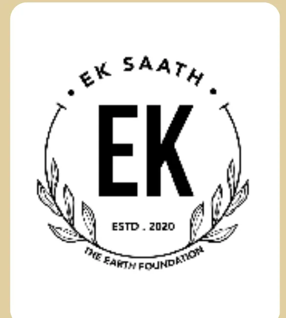
EK SAATH
The Earth Foundation is a Mumbai NGO that uses community action and behavior change to implement waste management and sustainability projects for cleaner local environments.
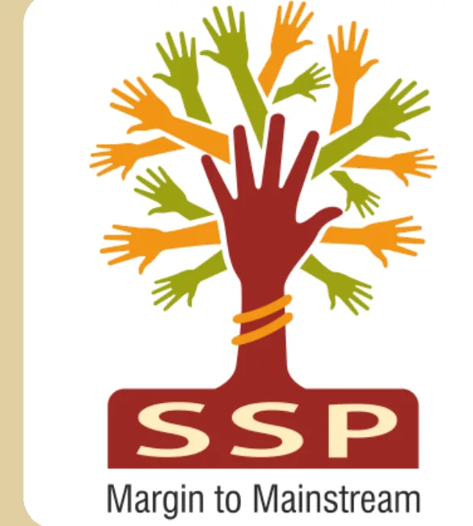
SWAYAM SHIKSHAN PRAYOG
Swayam Shikshan Prayog (SSP) is a Pune-based NGO that empowers women leaders in health, water, sanitation, and climate-resilient farming to ensure sustainable rural development.
Part two
Mapping the system
The people, places and things around Shrunkhala, and how they connect.
System mapping
System Mapping
- Human
- Spaces
- Non-human
Read the elements as a list
- Shrunkhala
- Founder
- Homemakers
- Teachers
- Children
- Elderly
- Community Leaders
- Government Representatives
- Gram Panchayat
- NGO Partners
- Dreamweaver
- Ankur
- Zero Waste
- Kavach
- Champ
- Behavioral Change
- Awareness Materials
- Measurement Tools
- Segregation Instrument
- Waste Collection Bags
- Composting Bins
- Thermocol Recycling
- Plastic Recycling Premier League
- Rewards
- Event Materials
- Logistics
- Communication Platforms
- Educational Institutions
- Public Spaces
- Homes
- Waste Collection Centers
- Hospices
- Rehabilitation Centers
- Orphanages
- Community Centers
- Kitchen Gardens
- Offices
- Regions Focused
- Navi Mumbai
- Kharghar
- Kalyan
- Raigad
- Sangli
- Ambarnath
- Dombivli
Stakeholders
Stakeholder Mapping
Informed
Suppliers · Vendors
Involved
Educational Institution
Volunteers
Core
Founder
Field Staff
Beneficiaries
Homemakers
Beneficiaries
Vidya Samvardhan
Students for underprivileged communities
Unnati
Youth and women from LIG communities
Seva
- Marginalized families
- Homeless individuals
- Disaster affected groups
Jaago
- Local communities
- Urban Residents
Stakeholders
Stakeholder Matrix
High power · Low interest
- Local Government Bodies
- Informed Suppliers
- Educational Institutions
High power · High interest
- Founder
- Community Leaders
- NGO Partners
- Government Representatives
Low power · Low interest
- Urban Residents
- Vendors
- General Public
Low power · High interest
- Homemakers
- Children
- Elderly
- Teachers
- Volunteers
- Beneficiaries
Systems thinking
Iceberg Model
- Initial public reluctance: “Not my job; municipality’s duty.”
- Rewards for sustainable actions
- Women’s workshops
- Zero-waste drives
- Kitchen gardens
- Reward competitions.
- Rising rates of recycling
- Habit routine triggered by discomfort
- Repeated use of incentives
- Gradual rise in engagement and participation.
- Volunteer-based, flexible organization.
- Community-led design
- Collective decisions
- Constant redesign as per community feedback.
- Waste tracking and digital updates
- Sustainability is everyone's daily job
- Knowledge drives sustainable choices
- Norms: "Not my job" as barrier
- Trust built by respecting local culture
- Rewards and feedback sustain change
- System thinking guides program design
Systems thinking
Causal Loop Diagram
Part three
Listening to people
Primary research with the people who work with, and benefit from, Shrunkhala.
Primary research
Interviews
Beneficiary
- Gender
- Male
- Age
- 42
- Occupation
- Small scale farmer
- Address
- Uran Taluka, Raigad District
Volunteer 1
- Gender
- Female
- Age
- 34
- Occupation
- Homemaker
- Address
- Kharghar, Navi Mumbai, Kalyan–Shrunkhala Sustainable Systems
Volunteer 2
- Gender
- Female
- Age
- 43
- Occupation
- Primary School Teacher
- Address
- Dharavi, Mumbai — Community Learning Centre
Primary research
Volunteer Verbatim
Volunteer Motivation
“Shuru mein timepass lagta tha, but when I saw how a small act like waste segregation changes lives, it became my personal responsibility as a citizen.”
“I was in touch with the founder as we shared same office earlier so I was one of the first people to join Shrunkhala.”
Community Impact
“Seedball campaigns mein citizen participation amazing hota hai. Log seedhi aur collective impact wali cheezon se instantly jud jaate hain.”
“Simple steps like composting and waste sorting help our land stay healthier. Learning sustainable habits makes a big difference.”
“When we started with blue bag campaign in our society the mujhe notice huwa ki plastic weight gradually increase huwa per flat even my son started monitoring waste jo usme ja skta hai.”
“It’s not just about the people we are working for even aap jaise students ko bhi fayda milta hai when you work with us aap bohot sari skills develop kr lete ho.”
Structural Challenges
“Tree plantation drives mein har baar permits aur coordination tough hota hai. Nagar Palika ke saath engagement ke liye clear protocol hona chahiye.”
“The last moment change of plan is quite common jaise jab kisi college me collection zyada ho gaya then we have to arrange different type of vehicle also if a newer volunteer is on field. Honestly there are a lot of moving parts.”
Findings
Gaps Identified
Behavioural change
“Not my duty”
Structural gap
Decision making load on the Founder
Cultural gap
A lack of a standardized cultural assessment before starting a program in a new area.
Part four
Designing for change
Gaps and solutions added to the system, and the behaviour change journey that follows.
System mapping
System Mapping with gaps and solutions
- Gap
- Human
- Non-human
- Solution
- Space
Read the elements as a list
- Shrunkhala
- Founder
- Homemakers
- Teachers
- Children
- Elderly
- Community Leaders
- Government Representatives
- Gram Panchayat
- NGO Partners
- Dreamweaver
- Ankur
- Zero Waste
- Kavach
- Champ
- Behavioral Change
- Awareness Materials
- Measurement Tools
- Segregation Instrument
- Waste Collection Bags
- Composting Bins
- Thermocol Recycling
- Plastic Recycling Premier League
- Rewards
- Event Materials
- Logistics
- Communication Platforms
- Educational Institutions
- Public Spaces
- Homes
- Waste Collection Centers
- Hospices
- Rehabilitation Centers
- Orphanages
- Community Centers
- Kitchen Gardens
- Offices
- Regions Focused
- Navi Mumbai
- Kharghar
- Kalyan
- Raigad
- Sangli
- Ambarnath
- Dombivli
- Structural Gap (gap)
- Behavioural Change (gap)
- Habitual Change (solution)
- Training (solution)
- Leaflet (solution)
- Information (solution)
- AR Lens (solution)
- Awareness (solution)
- Measuring Change (solution)
- Guidelines (solution)
- Flash Cards (solution)
Systems thinking
Causal Loop Diagram · Shrunkhala’s Intervention
Behaviour change
Behavioural Change Model
*Reference: Mahamuni, Ravi. 2020. Crafting a Change: Service Design Perspective for Sustained Behaviour Change.
Behaviour change
Segregating Waste Correctly
Introducing New Behaviour: Segregate recyclables, compostables, & general waste daily.
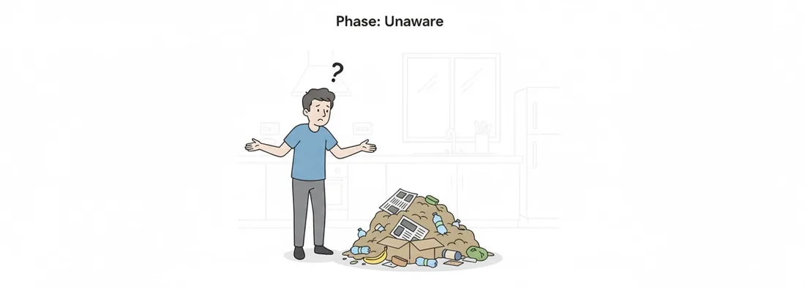
Unaware
“What is waste segregation, and why should I care?”
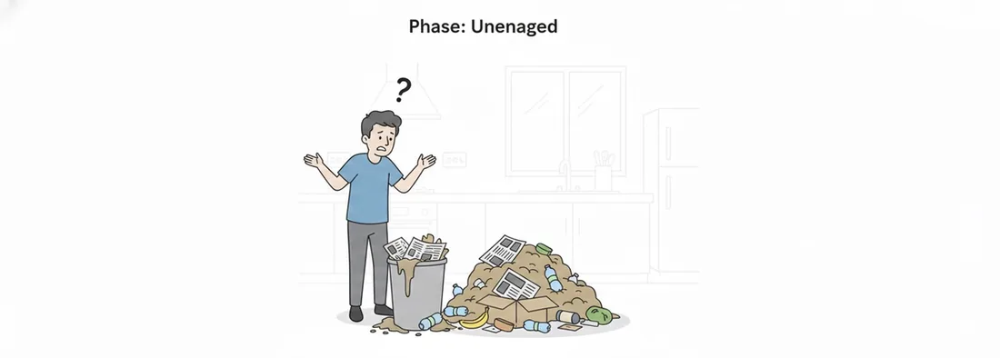
Unengaged
“My mixed trash is creating problems right now.”
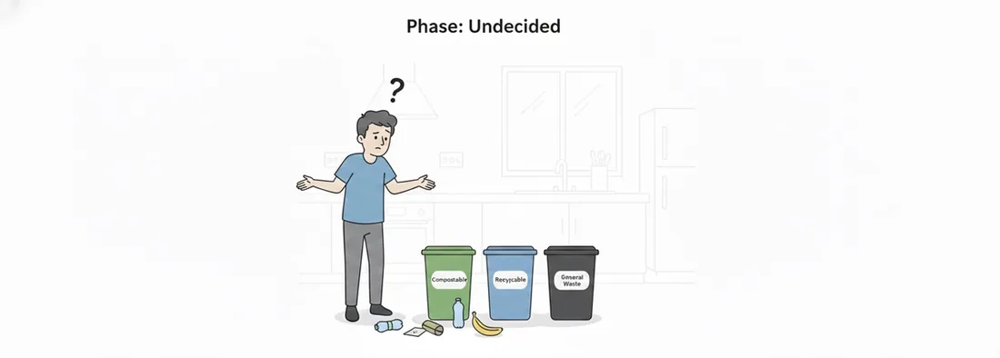
Undecided
“I agree it’s a problem, but I don’t know the rules or the first step.”
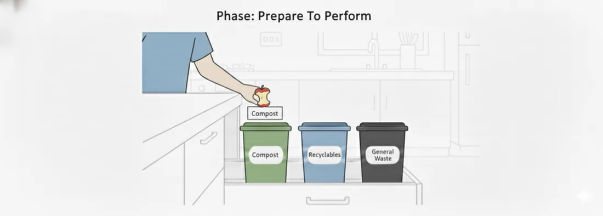
Prepare To Perform
“I have the knowledge, now I need the physical system to make it easy.”
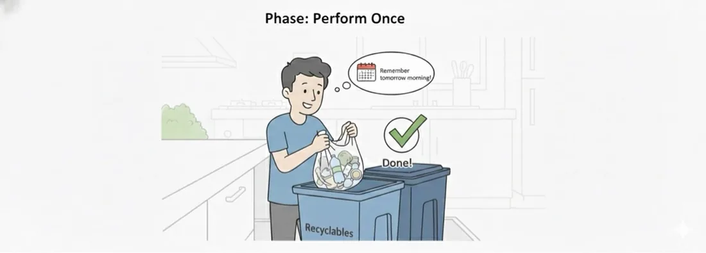
Perform Once
“I did it! That was easy. Now I just need to remember to do it again.”
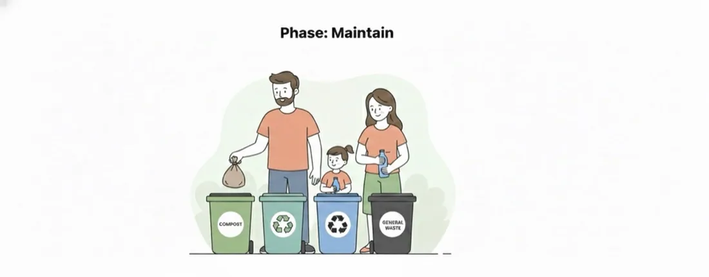
Maintain
“This is now a part of my routine, and I feel good about contributing.”
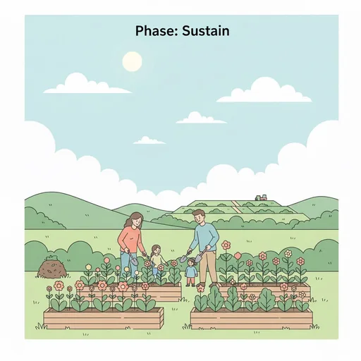
Sustain
“My effort creates visible, long-term benefits for my community and the environment.”
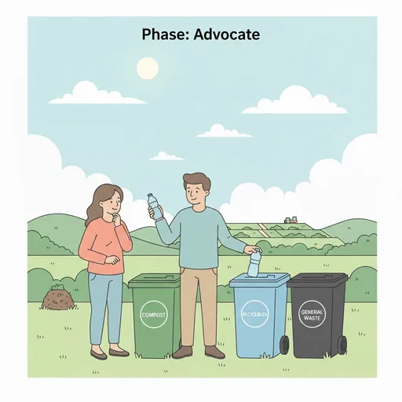
Advocate
“This is too important to keep quiet about. I must inspire others to join.”
Awareness
Awareness
CHOOSE YOUR COLOUR WISELY
Awareness is the first step towards behaviour change.
- Plastic (e.g., plastic bottles, plastic bags)
- Organic (e.g., fruit, leaves, food scraps)
- Paper (e.g., newspapers, cardboard, packaging)
- Hazardous (e.g., syringes, batteries, specific chemical containers)
Measuring the behavioural change
Guidelines leaflet
Guidelines Leaflet
Structural organization
- Founder
- Project Coordinators
- Volunteers
Thank you